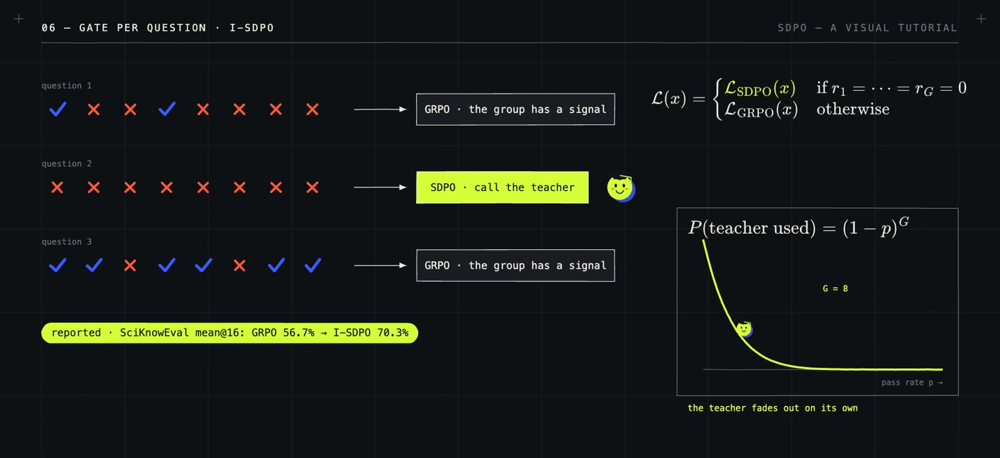

/ 6:40 VIDEO · 2 MIN READ
SDPO with hindsight:
when not to follow the teacher.
Learning from your own failures in hindsight is an old idea in reinforcement learning. Hindsight Experience Replay (2017) relabelled a robot's failed attempts with the goal it had actually reached, so failures still taught something. For language models, context distillation (2022) trained a model to behave without a long prompt the way it behaves with it, and on-policy distillation (2023) trained a student on its own samples, scored token by token by a teacher. Self-Distillation Policy Optimization (SDPO, January 2026) combines the two: the teacher is the same model, shown the feedback the environment returned.
Its role is to use information that reinforcement learning with verifiable rewards (RLVR) throws away. There, each attempt earns one number, pass or fail, shared by every token. Nothing says which line of a failing program was wrong, even when the environment printed the error message.
SDPO runs the same model in two contexts. The student sees the question \(x\). The teacher sees \(x\) plus the feedback \(f\), such as an error message or a successful attempt from the same batch, and rereads the student's attempt \(y\) token by token: \[\pi_S(\cdot \mid y_{\lt t}) = \pi_\theta(\cdot \mid x, y_{\lt t}), \qquad \pi_T(\cdot \mid y_{\lt t}) = \pi_\theta(\cdot \mid x, f, y_{\lt t}).\] Training minimizes, at every token, the Kullback–Leibler (KL) divergence from the student to the teacher, with the teacher held fixed (sg, stop-gradient): \[\mathcal{L}_{\text{SDPO}}(\theta) = \sum_t \mathrm{KL}\Big(\pi_S(\cdot \mid y_{\lt t}) \,\Big\|\, \mathrm{sg}\big[\pi_T(\cdot \mid y_{\lt t})\big]\Big).\] Its gradient gives each token its own advantage, \(\log \pi_T(y_t) - \log \pi_S(y_t)\): tokens the teacher prefers in hindsight go up, the ones that caused the failure go down. No larger model is involved. The paper reports 48.8% against 41.2% for GRPO, the standard group-based RLVR algorithm, on the LiveCodeBench v6 coding benchmark, with shorter answers.

The catch is that the teacher has seen information the student will not have at test time. Copying it everywhere can teach shortcuts that depend on the answer, overwrite correct reasoning and reduce exploration, so the 2026 follow-ups decide where to follow it. I-SDPO uses the teacher only when every attempt in the group failed. For \(G\) independent attempts with success rate \(p\) that happens with probability \((1-p)^G\), so the teacher fades out as the model improves; on the SciKnowEval benchmark, accuracy rose from 56.7% with GRPO to 70.3%. Pass-rate weighting scales each question by \(\sqrt{\hat p(1-\hat p)}\), favouring questions of intermediate difficulty. ROSD, PW-OPSD, SA-OPD and USD choose which tokens to correct, and DemoPSD moves the student towards a blend of the two, \(q_t \propto \pi_T^{\alpha_t}\, \pi_S^{1-\alpha_t}\), rather than towards the teacher itself.
SDPO depends on the model's ability to learn from its context and on the quality of the feedback. In continual training, Denser ≠ Better finds that dense self-distillation forgets earlier skills more than GRPO does.